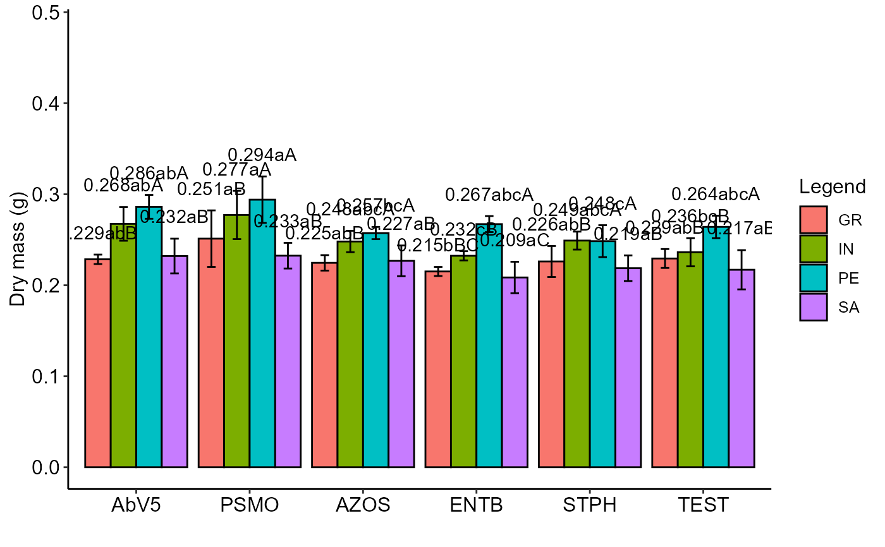

PSUBDIC.RdAnalysis of an experiment conducted in a completely randomized design in a split-plot scheme using fixed effects analysis of variance.
PSUBDIC( f1, f2, block, response, norm = "sw", homog = "bt", mcomp = "tukey", alpha.f = 0.05, alpha.t = 0.05, quali = c(TRUE, TRUE), transf = 1, grau = NA, geom = "bar", theme = theme_classic(), ylab = "Response", xlab = "", fill = "lightblue", angle = 0, family = "sans", color = "rainbow", legend = "Legend", errorbar = TRUE, addmean = TRUE, textsize = 12, dec = 3, ylim = NA, posi = "right", point = "mean_se", angle.label = 0 )
| f1 | Numeric or complex vector with plot levels |
|---|---|
| f2 | Numeric or complex vector with subplot levels |
| block | Numeric or complex vector with blocks |
| response | Numeric vector with responses |
| norm | Error normality test (default is Shapiro-Wilk) |
| homog | Homogeneity test of variances (default is Bartlett) |
| mcomp | Multiple comparison test (Tukey (default), LSD, Scott-Knott and Duncan) |
| alpha.f | Level of significance of the F test (default is 0.05) |
| alpha.t | Significance level of the multiple comparison test (default is 0.05) |
| quali | Defines whether the factor is quantitative or qualitative (qualitative) |
| transf | Applies data transformation (default is 1; for log consider 0) |
| grau | Degree of polynomial in case of quantitative factor (default is 1) |
| geom | Graph type (columns or segments (For simple effect only)) |
| theme | ggplot2 theme (default is theme_classic()) |
| ylab | Variable response name (Accepts the expression() function) |
| xlab | Treatments name (Accepts the expression() function) |
| fill | Defines chart color (to generate different colors for different treatments, define fill = "trat") |
| angle | x-axis scale text rotation |
| family | Font family (default is sans) |
| color | When the columns are different colors (Set fill-in argument as "trat") |
| legend | Legend title name |
| errorbar | Plot the standard deviation bar on the graph (In the case of a segment and column graph) - default is TRUE |
| addmean | Plot the average value on the graph (default is TRUE) |
| textsize | Font size (default is 12) |
| dec | Number of cells (default is 3) |
| ylim | y-axis limit |
| posi | Legend position |
| point | Point type for regression ("mean_se","mean_sd","mean" or "all") |
| angle.label | Label angle |
The table of analysis of variance, the test of normality of errors (Shapiro-Wilk, Lilliefors, Anderson-Darling, Cramer-von Mises, Pearson and Shapiro-Francia), the test of homogeneity of variances (Bartlett or Levene), the test of independence of Durbin-Watson errors, the test of multiple comparisons (Tukey, LSD, Scott-Knott or Duncan) or adjustment of regression models up to grade 3 polynomial, in the case of quantitative treatments. Non-parametric analysis can be used by the Friedman test. The column chart for qualitative treatments is also returned. The function also returns a standardized residual plot.
The ordering of the graph is according to the sequence in which the factor levels are arranged in the data sheet. The bars of the column and segment graphs are standard deviation.
In the final output when transformation (transf argument) is different from 1, the columns resp and respo in the mean test are returned, indicating transformed and non-transformed mean, respectively.
Principles and procedures of statistics a biometrical approach Steel, Torry and Dickey. Third Edition 1997
Multiple comparisons theory and methods. Departament of statistics the Ohio State University. USA, 1996. Jason C. Hsu. Chapman Hall/CRC.
Practical Nonparametrics Statistics. W.J. Conover, 1999
Ramalho M.A.P., Ferreira D.F., Oliveira A.C. 2000. Experimentacao em Genetica e Melhoramento de Plantas. Editora UFLA.
Scott R.J., Knott M. 1974. A cluster analysis method for grouping mans in the analysis of variance. Biometrics, 30, 507-512.
Gabriel Danilo Shimizu, shimizu@uel.br
Leandro Simoes Azeredo Goncalves
Rodrigo Yudi Palhaci Marubayashi
#=================================== # Example tomate #=================================== # Obs. Consider that the "tomato" experiment is a completely randomized design. library(AgroR) data(tomate) with(tomate, PSUBDIC(parc, subp, bloco, resp, ylab="Dry mass (g)"))#> #> ----------------------------------------------------------------- #> Normality of errors #> ----------------------------------------------------------------- #> Method Statistic p.value #> Shapiro-Wilk normality test(W) 0.9922285 0.8548406 #>#> As the calculated p-value is greater than the 5% significance level, hypothesis H0 is not rejected. Therefore, errors can be considered normal#> #> #> ----------------------------------------------------------------- #> Homogeneity of Variances #> ----------------------------------------------------------------- #> Plot #> Method Statistic p.value #> Bartlett test(Bartlett's K-squared) 5.115877 0.4019028 #>#> As the calculated p-value is greater than the 5% significance level, hypothesis H0 is not rejected. Therefore, the variances can be considered homogeneous#> #> ---------------------------------------------------- #> Split-plot #> Method Statistic p.value #> Bartlett test(Bartlett's K-squared) 1.461814 0.6911112 #>#> As the calculated p-value is greater than the 5% significance level, hypothesis H0 is not rejected. Therefore, the variances can be considered homogeneous#> #> ---------------------------------------------------- #> Interaction #> Method Statistic p.value #> Bartlett test(Bartlett's K-squared) 23.94565 0.406823 #>#> As the calculated p-value is greater than the 5% significance level, hypothesis H0 is not rejected. Therefore, the variances can be considered homogeneous#> #> ----------------------------------------------------------------- #> Additional Information #> ----------------------------------------------------------------- #> #> CV1 (%) = 10.67 #> CV2 (%) = 4.55 #> Mean = 0.2433 #> Median = 0.2402 #> #> #> ----------------------------------------------------------------- #> Analysis of Variance #> ----------------------------------------------------------------- #> Df Sum Sq Mean Sq F value Pr(>F) #> F1 5 0.012779159 0.0025558319 3.793889 0.016 #> Error A 18 0.012126072 0.0006736707 #> F2 3 0.033333572 0.0111111908 90.570262 p<0.001 #> F1 x F2 15 0.004012849 0.0002675233 2.180653 0.019 #> Error B 54 0.006624738 0.0001226803#>#> #> ----------------------------------------------------------------- #> Significant interaction: analyzing the interaction #> ----------------------------------------------------------------- #> Analyzing F1 inside of each level of F2 #> ----------------------------------------------------------------- #> GL SQ QM Fc p.value #> F1 : F2 GR 5.00000 0.00285200 0.000570 2.190341 0.074853 #> F1 : F2 IN 5.00000 0.00612400 0.001225 4.702737 0.001855 #> F1 : F2 PE 5.00000 0.00602100 0.001204 4.623975 0.00207 #> F1 : F2 SA 5.00000 0.00179500 0.000359 1.378652 0.253307 #> Combined error 39.14545 0.01017782 0.000260 #> #> ----------------------------------------------------------------- #> Analyzing F2 inside of the level of F1 #> ----------------------------------------------------------------- #> GL SQ QM Fc p.value #> F2 : F1 AbV5 3 0.009387 0.003129 25.506107 0 #> F2 : F1 PSMO 3 0.008936 0.002979 24.280165 0 #> F2 : F1 AZOS 3 0.003100 0.001033 8.422958 0.00011 #> F2 : F1 ENTB 3 0.008261 0.002754 22.446718 0 #> F2 : F1 STPH 3 0.002889 0.000963 7.850077 0.000194 #> F2 : F1 TEST 3 0.004773 0.001591 12.967502 2e-06 #> Error b 54 0.006625 0.000123#> #> ----------------------------------------------------------------- #> Final table #> ----------------------------------------------------------------- #> GR IN PE SA #> AbV5 0.229 abB 0.268 abA 0.286 abA 0.232 aB #> PSMO 0.251 aB 0.277 aA 0.294 aA 0.233 aB #> AZOS 0.225 abB 0.248 abcA 0.257 bcA 0.227 aB #> ENTB 0.215 bBC 0.232 cB 0.267 abcA 0.209 aC #> STPH 0.226 abB 0.249 abcA 0.248 cA 0.219 aB #> TEST 0.229 abB 0.236 bcB 0.264 abcA 0.217 aB#> #> #>